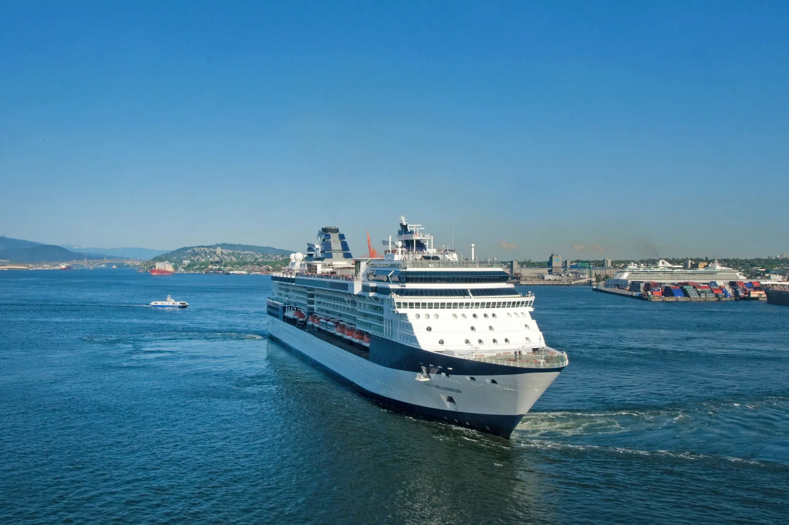

Costa brasileira
A temporada vai, em geral, de novembro a abril. É quando os navios ficam baseados no Brasil e você embarca sem voo internacional.

Navio, cabine, voo, documento e o que fazer em cada parada. A gente resolve a viagem inteira em volta do cruzeiro, não só a reserva dele.
Cruzeiro parece a viagem mais simples de comprar e é das mais fáceis de errar. A diferença entre uma cabine e a cabine ao lado muda a viagem inteira, o voo errado faz você perder o embarque, e metade do que as pessoas acham que está incluído não está. É aí que a consultoria entra.
A temporada vai, em geral, de novembro a abril. É quando os navios ficam baseados no Brasil e você embarca sem voo internacional.
Roteiros entre Itália, Grécia, Espanha e França, com parada em cidade histórica quase todo dia.
Ilhas, praia e mar calmo. É o destino mais procurado por quem está fazendo o primeiro cruzeiro.
As respostas mudam de armador para armador. A gente confere a sua antes de você fechar.
Em geral: a cabine, as refeições dos restaurantes principais, o entretenimento de bordo e o deslocamento entre os portos. Quase sempre fica de fora: bebida alcoólica, restaurante de especialidade, excursão em terra, internet, spa e a taxa de serviço. O que entra e o que não entra muda de armador para armador, e essa é uma das primeiras coisas que a gente confere com você.
A maioria dos armadores cobra uma taxa de serviço por pessoa, por noite, que cai na conta de bordo e é paga no fim da viagem. O valor varia por armador e por categoria de cabine. Alguns deixam você pagar junto com a passagem, o que ajuda a não levar susto no desembarque. A gente te diz qual é o valor do seu antes de fechar.
Água, café, chá e suco costumam estar inclusos nas refeições. Refrigerante, cerveja, vinho e destilado geralmente não. Quase todo armador vende pacote de bebidas por dia. Se compensa ou não depende de quanto vocês bebem, e essa conta a gente faz junto com você antes de comprar.
Navio grande e moderno tem estabilizador e balança bem menos do que as pessoas imaginam, principalmente em roteiro de costa e no Caribe. Se você sabe que tende a enjoar, cabine no meio do navio e em deck mais baixo balança menos, e isso a gente leva em conta na hora de escolher. Sobre remédio, converse com o seu médico antes de embarcar.
Depende do roteiro. Cruzeiro só na costa brasileira costuma pedir documento de identidade com foto, dentro da validade. Roteiro que toca outro país pede passaporte e, em alguns casos, visto. Menor de idade viajando sem os dois pais precisa de autorização. A gente monta a lista do seu roteiro e confere com você antes da compra, não na véspera.
Cinco perguntas rápidas. Dá para responder do celular, na fila do banco.
Começar o briefing